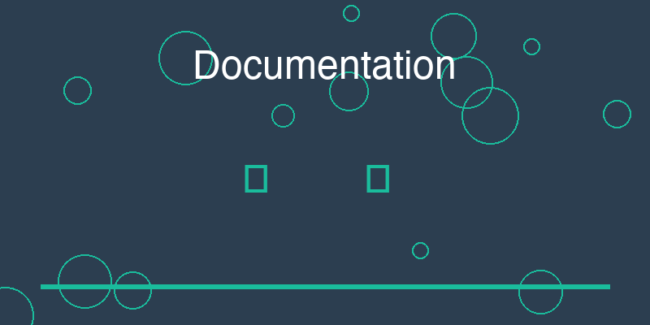

12 Documentation as Interface: README, Docs, and Examples

When developers think about interfaces, they often imagine command-line tools, APIs, or graphical user interfaces. These are the mechanisms through which users interact directly with software.
Yet there is another interface that appears even earlier in the experience of using a system: documentation.
Before running the code, before calling an API, and often before installing the software, a user encounters the documentation. They read the README, browse the project description, or examine examples.
In this sense, documentation is not merely supporting material. It is part of the public surface of the system.
For many users, it is the very first interaction with the project.
12.0.1 Documentation as the Product Surface
Practice projects often treat documentation as an afterthought. A short README may describe the purpose of the project and perhaps include a brief instruction for running the code.
This minimal approach may be sufficient for personal experiments, but it leaves an important gap. When documentation is incomplete or unclear, the system becomes difficult to approach. Even if the code is well written, users may struggle to understand how the pieces fit together.
Professional systems treat documentation differently.
They recognize that documentation functions as the explanatory layer of the system. It helps users form a mental model before they interact with the software itself.
Good documentation answers fundamental questions:
What does this system do?
Why does it exist?
How can it be installed?
How should it be used?
When these questions are addressed clearly, the project becomes far more accessible.
In other words, documentation acts as a guide to the architecture of the system.
12.0.2 The Role of the README
The README file is often the first document users encounter. It appears directly on the repository’s front page and serves as an introduction to the project.
Because of its visibility, the README carries a special responsibility: it must quickly communicate what the system is and why someone might want to use it.
A well-designed README does not attempt to explain every technical detail. Instead, it focuses on clarity and orientation. It gives readers enough information to understand the purpose of the system and how to begin using it.
Practice projects frequently stop here, providing only minimal information.
Professional projects, however, expand beyond the README into more structured documentation.
12.0.3 Structured Documentation
As a system grows, additional documentation helps users navigate more complex aspects of the project.
These documents may describe the architecture of the system, configuration options, deployment instructions, or integration methods.
Unlike the README, which focuses on quick orientation, structured documentation allows deeper exploration.
This layered approach mirrors the structure of the system itself. Users begin with a high-level overview and gradually move toward more detailed explanations as needed.
12.0.4 Examples as Learning Paths
Examples play a crucial role in documentation.
Many users prefer to learn by observing concrete demonstrations rather than reading abstract explanations. A small example that shows how to perform a common task can often communicate more effectively than a lengthy description.
Professional projects frequently include examples that illustrate typical workflows. These examples help users understand not only what the system can do but also how its components fit together in practice.
Examples transform documentation from passive explanation into practical guidance.
12.0.5 A Minimal Professional Documentation Template
While documentation can become extensive, most professional projects share a small set of essential components.
A minimal documentation structure often includes the following elements:
Overview
A short explanation of what the system does and the problem it solves.
Installation
Instructions for setting up the software and its dependencies.
Usage
Basic examples demonstrating how to run the system or perform common tasks.
Configuration
Descriptions of configurable parameters and environment settings.
Architecture (optional but valuable)
A high-level explanation of the system’s structure and key components.
Examples
Concrete demonstrations that illustrate typical workflows.
This structure does not require large amounts of text. Even concise explanations can dramatically improve the accessibility of a project.
What matters most is clarity.
12.0.6 Documentation as a Signal of Maturity
When documentation is well organized, it communicates something important about the system.
It signals that the developers expect others to read, understand, and use the software. It shows that the project has moved beyond experimentation and into a stage where communication matters.
In contrast, the absence of documentation sends the opposite signal. The system may still function correctly, but it appears unfinished or inaccessible.
Because documentation sits at the surface of the project, it strongly influences how the system is perceived.
A well-documented project feels welcoming and deliberate. A poorly documented one feels temporary.
By treating documentation as an interface rather than an afterthought, developers create a bridge between the internal structure of the system and the people who interact with it.
And that bridge is one of the clearest indicators that a project has matured into professional software.
12.1 实践指南：专业文档编写SOP
文档是项目的门面，良好的文档能显著提升项目的可访问性和专业形象。以下是一个实用的文档编写框架。
12.1.1 文档类型分类
核心文档（必须）： - README.md - 项目概览和快速开始 - LICENSE - 许可证信息 - CONTRIBUTING.md - 贡献指南
技术文档（推荐）： - API文档 - 接口说明和参数 - 架构文档 - 系统设计和组件关系 - 部署文档 - 安装和配置指南
用户文档（推荐）： - 用户指南 - 使用说明和最佳实践 - 示例代码 - 可运行的示例 - FAQ - 常见问题解答
12.1.2 文档编写SOP
第一步：定义受众
# 受众分析模板
受众类型 = {
"最终用户": {
"关注点": ["如何使用", "能做什么", "如何安装"],
"文档类型": ["README", "用户指南", "FAQ"],
"技术深度": "低"
},
"开发者": {
"关注点": ["API设计", "代码结构", "贡献方式"],
"文档类型": ["API文档", "架构文档", "CONTRIBUTING"],
"技术深度": "高"
},
"运维人员": {
"关注点": ["部署方式", "配置管理", "监控告警"],
"文档类型": ["部署文档", "配置文档"],
"技术深度": "中"
}
}第二步：选择文档格式
格式选择指南： - Markdown（.md） - 通用文档，支持代码高亮 - OpenAPI/Swagger - API文档，可生成交互式文档 - AsciiDoc（.adoc） - 技术文档，支持复杂结构 - reStructuredText（.rst） - Python项目，支持Sphinx
推荐： 使用Markdown作为主要格式，特殊文档使用专业工具。
第三步：建立文档结构
docs/
├── README.md # 项目概览（根目录）
├── LICENSE # 许可证（根目录）
├── CONTRIBUTING.md # 贡献指南（根目录）
├── user-guide.md # 用户指南
├── api-docs/ # API文档
│ ├── overview.md
│ ├── endpoints.md
│ └── models.md
├── architecture.md # 架构文档
├── deployment.md # 部署指南
└── examples/ # 示例代码
├── basic-usage.py
└── advanced-usage.py第四步：编写README模板
# 项目名称
简短的项目描述（一句话说明项目的作用）。
## 功能特性
- 功能1：描述
- 功能2：描述
- 功能3：描述
## 安装
### 前置要求
- Python 3.8+
- Node.js 14+
- Docker
### 快速开始
```bash
# 克隆仓库
git clone https://github.com/user/project.git
cd project
# 安装依赖
pip install -r requirements.txt
# 运行项目
python main.py12.2 使用
12.2.1 基本用法
# 示例代码
from myproject import Client
client = Client()
result = client.do_something()
print(result)12.2.2 配置
创建配置文件 config.yaml：
database:
host: localhost
port: 543212.3 文档
12.4 贡献
欢迎贡献！请查看 CONTRIBUTING.md 了解详情。
12.5 许可证
12.6 联系方式
- 作者：Your Name
- 邮箱：your.email@example.com
- 问题反馈：GitHub Issues
**第五步：编写示例代码**
```python
# examples/basic-usage.py
"""
基本使用示例
这个示例展示了如何使用项目的核心功能。
"""
from myproject import Client, Config
def main():
# 1. 创建配置
config = Config(
api_key="your-api-key",
timeout=30
)
# 2. 初始化客户端
client = Client(config)
# 3. 执行操作
try:
result = client.create_user(
name="John Doe",
email="john@example.com"
)
print(f"用户创建成功: {result}")
except Exception as e:
print(f"错误: {e}")
if __name__ == "__main__":
main()12.6.1 文档质量检查清单
README检查： - [ ] 项目名称和简短描述清晰 - [ ] 功能特性列表完整 - [ ] 安装步骤详细且可执行 - [ ] 快速开始示例可运行 - [ ] 文档链接准确 - [ ] 许可证信息明确
代码示例： - [ ] 示例代码可运行 - [ ] 有完整的上下文 - [ ] 有清晰的注释 - [ ] 涵盖常见用例 - [ ] 有错误处理示例
API文档： - [ ] 所有端点都有文档 - [ ] 参数类型和限制明确 - [ ] 有请求/响应示例 - [ ] 错误码完整 - [ ] 有版本说明
文档维护： - [ ] 文档与代码同步更新 - [ ] 有文档审查流程 - [ ] 有文档更新日志 - [ ] 有文档贡献指南
12.6.2 快速诊断：你的文档质量如何？
回答以下问题：
12.7 本章总结
文档是项目的门面，是用户与系统的第一个接口。良好的文档能够快速传达项目价值，降低使用门槛，提升项目专业形象。
README、结构化文档和示例代码构成了完整的文档体系。清晰的受众分析、合适的格式选择和系统的文档组织是高质量文档的基础。
文档不仅是说明材料，更是项目成熟度的信号。一个文档完善的项目，是一个值得信任的项目。
下一章，我们将探讨配置与环境。如何将硬编码的值转化为可部署的配置？
实践建议：
- 文档先行：在写代码之前，先写出README的大纲，这会帮助你思考项目结构。
- 示例为王：一段好的示例代码胜过千言万语。确保所有示例都可运行。
- 持续更新：代码变更时，同步更新文档。过时的文档比没有文档更糟糕。
- 用户视角：以用户的视角编写文档，而不是开发者的视角。
立即行动：
检查你的项目README，回答以下问题：新用户能否在15分钟内安装并运行你的项目？如果不能，立即改进README。